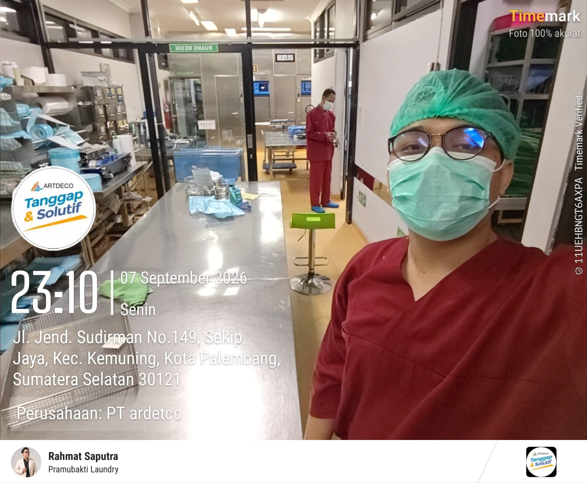
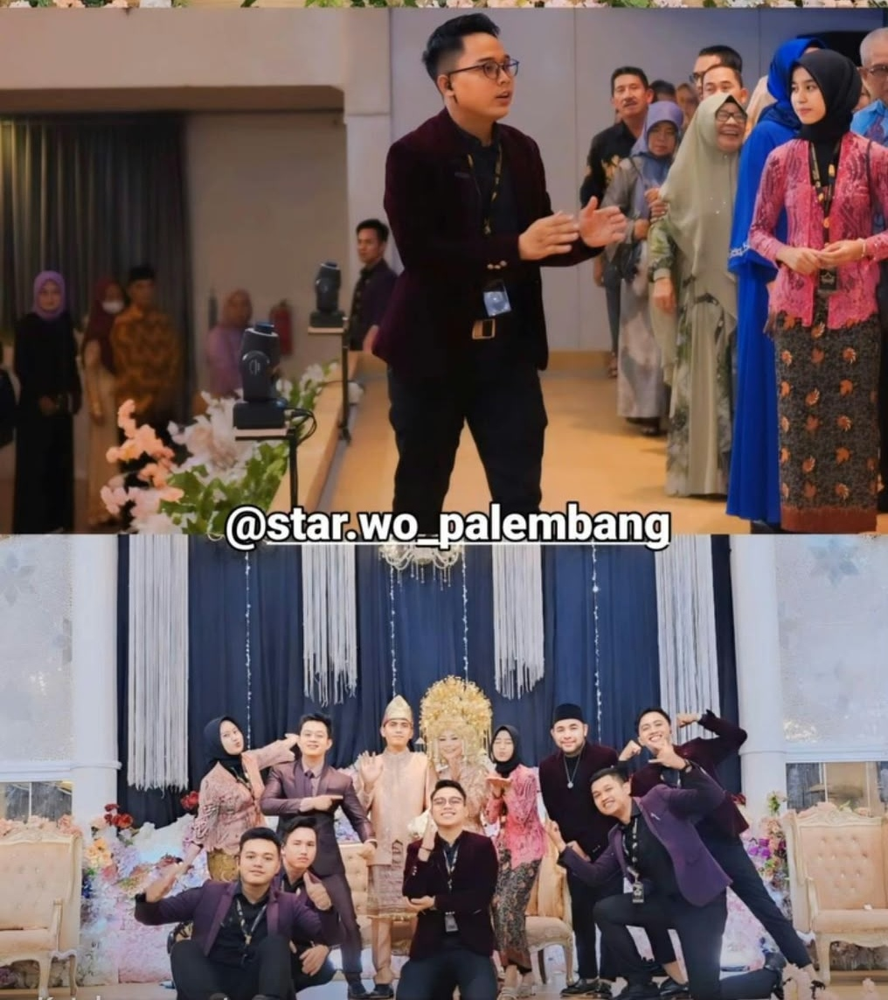

Healthcare Operations
Healthcare Operations
PORTOFOLIO PROFESIONAL · PALEMBANG, INDONESIA
Saya Rahmat Saputra — lulusan S1 Sistem Informasi dengan pengalaman dalam operasional rumah sakit, pengolahan data, dukungan teknis, koordinasi event, dan perjalanan wisata.
Rahmat Saputra
Operations · Data · IT Support
Saya memiliki pengalaman mengelola data operasional, menyiapkan laporan harian dan bulanan, serta memastikan pekerjaan berjalan sesuai prosedur. Di luar pekerjaan operasional, saya aktif membantu koordinasi wedding dan event, produksi, serta perjalanan wisata.
Dengan latar belakang Sistem Informasi, saya tertarik menggabungkan ketelitian administrasi, pemecahan masalah, dan pemahaman teknologi untuk mendukung tim dan proses kerja yang lebih efektif.

RS Mohammad Hoesin Palembang · Kementerian Kesehatan

PT Artdeco Sejahtera Abadi

Freelance · Event & Wedding
Galeri kegiatan profesional yang menampilkan koordinasi tim, pengelolaan acara, dan komunikasi lapangan.
FILM & TALENT COORDINATION
Mengoordinasikan talent/artis, kru, jadwal syuting, call sheet, serta kebutuhan logistik produksi.
TOUR LEADER
Memimpin peserta perjalanan domestik, memastikan itinerary, keselamatan, dan kenyamanan peserta.
INFORMATION SYSTEMS
Dasar pengembangan web dan aplikasi Android dari proyek pendidikan. Tambahkan detail dan tautan repo project yang sudah dipublikasikan.
Microsoft Excel, data entry, rekap laporan, pengelolaan inventaris.
Instalasi perangkat lunak dan troubleshooting dasar hardware/software.
Sterilisasi, dekontaminasi, dan distribusi alat sesuai SOP CSSD.
Koordinasi kru, talent, rundown acara, dan peserta perjalanan.
Saya terbuka untuk peluang di bidang operasional, administrasi, pengolahan data, dan IT Support, serta kolaborasi project.